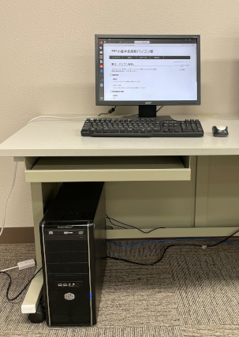

情報系
すべてが自由。
なにするの？
な ん で も あ り ！
プログラミングしてゲームを作ったり、古い自作パソコンを強引に使ったり、サーバーを動かしてみたり、officeソフトを極めてみたり...。部としてこれ！と決まった活動はありません。各自がパソコン部の限られた予算と設備を最大限駆使して活動しています。多分。
活動例
ウェブサイト制作
そう、このまさにこのウェブサイト！部活動の一環として、html、cssを学び作成しました。
自作パソコン
弊部所有の2009年式自作パソコンを整備、改造して情報系活動に使用しています！機械と格闘するのが好きな方、おすすめです。
| 1号機 | 2号機 | |
|---|---|---|
|  | ||
| OS | Linux Mint | Ubuntu |
| デスクトップ | Xfce | GNOME |
| CPU | i3 530 | |
| RAM | 4GB | |
| ストレージ | 100GB以下 | |
| グラフィック | インテルHDグラフィックス | |
プログラミング・ゲーム制作
scratchで作品を制作しています。かつては本格的な言語で3Dゲームを制作していたようなのですが...。技術が途絶えてしまい、今プログラミングができる部員はほぼ０。開拓者、お待ちしています。